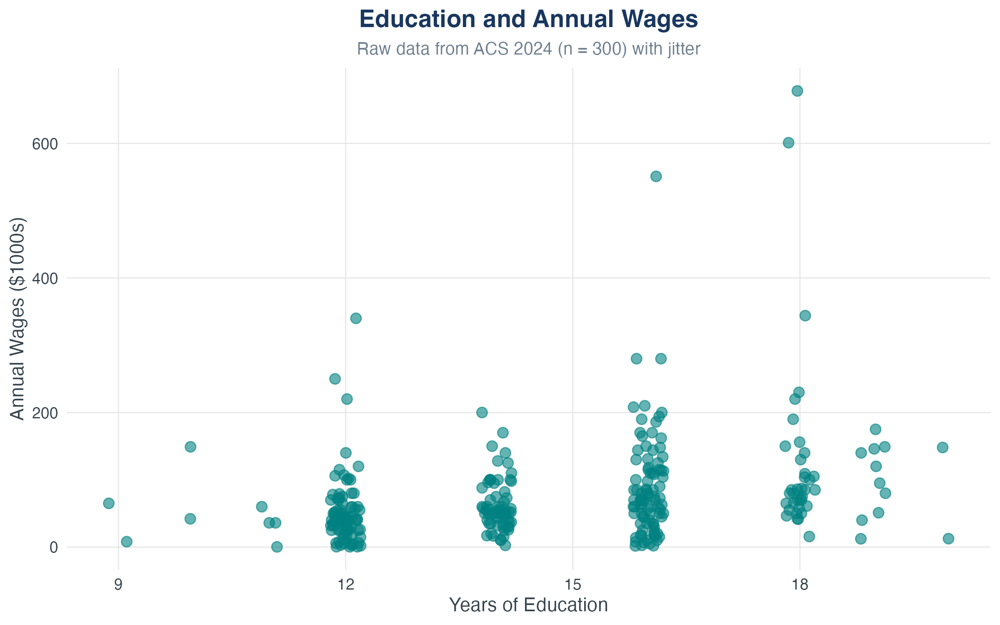
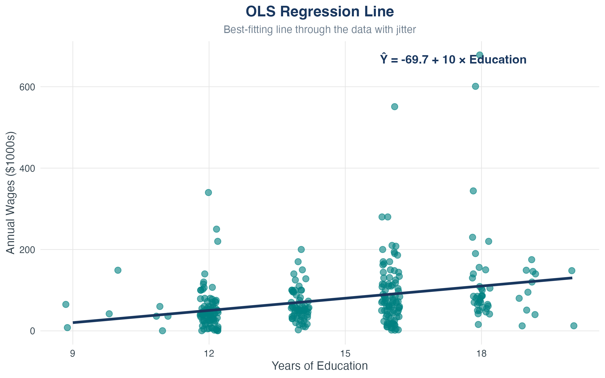
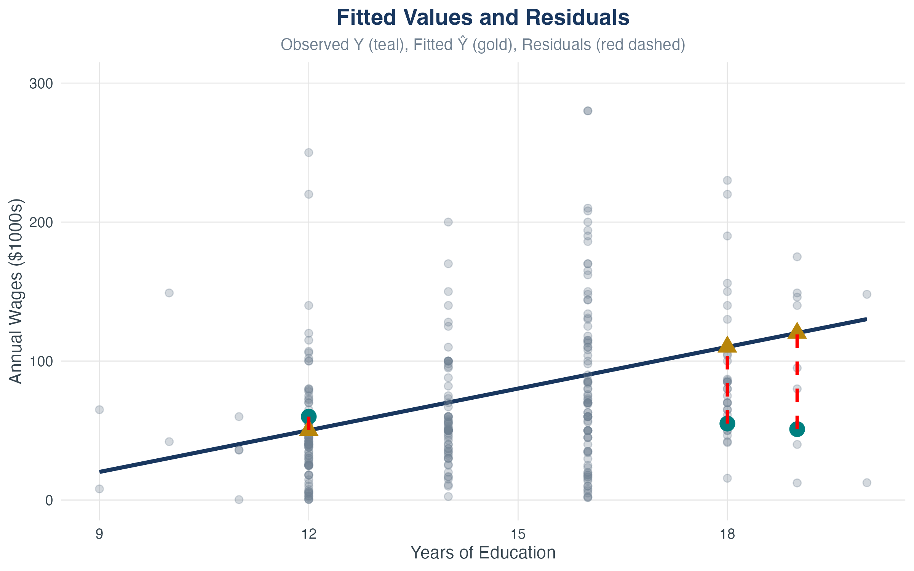
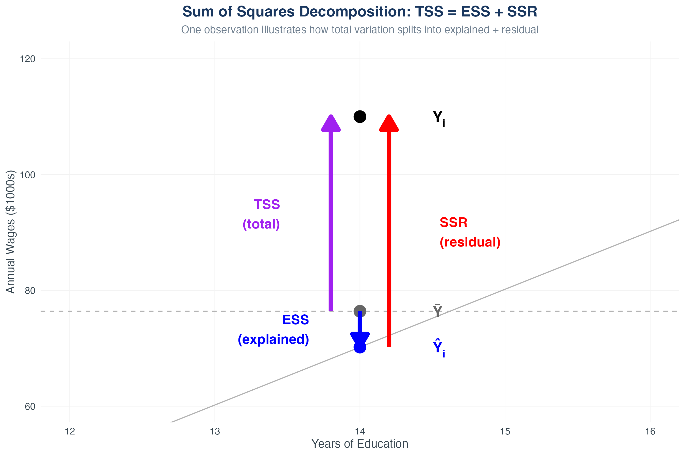
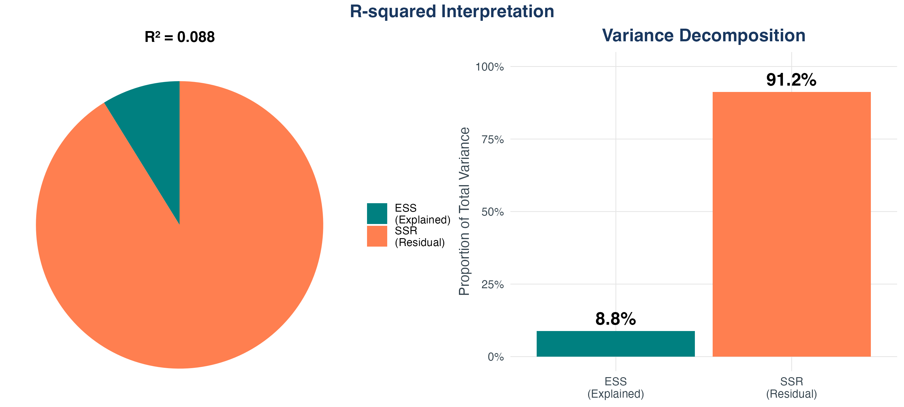
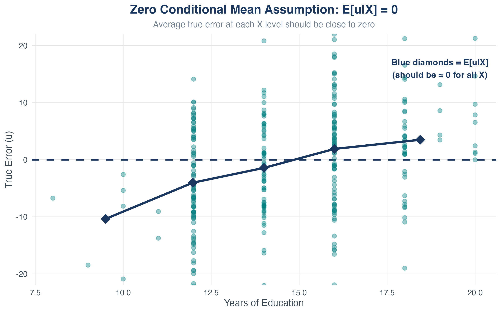
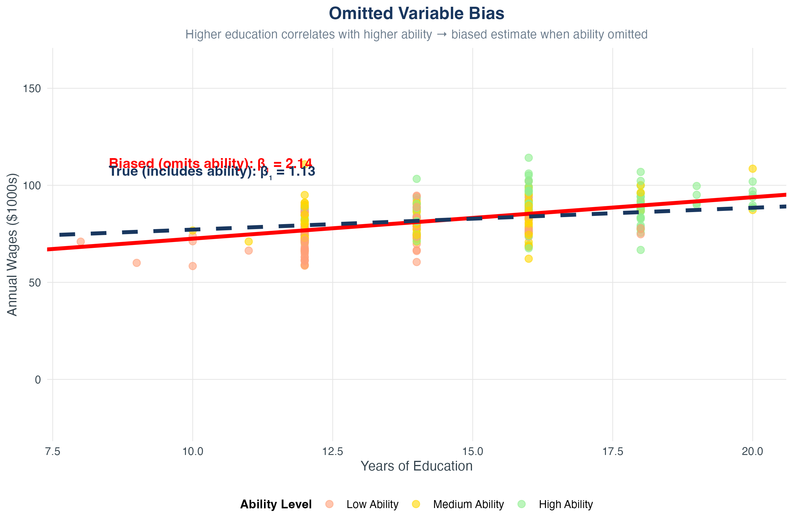
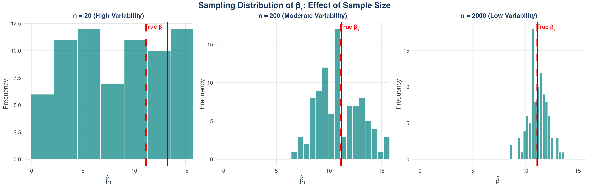
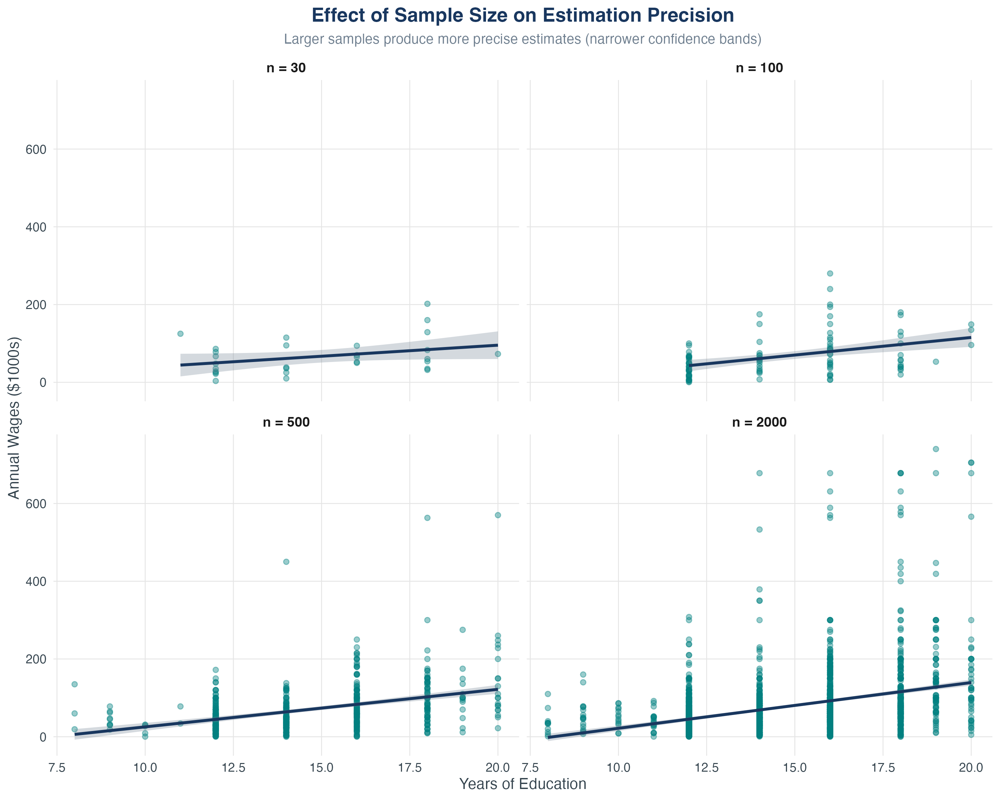

Chapter 4
Spring 2026
The Central Question
How do we move from observing relationships in data to making predictions and testing causal claims?
By the end of this chapter, you will be able to:
Returns to education
What are the economic returns to education?
Why this matters:
Our goal: Move from vague observations to a prediction rule we can compute from data.
Example data: Education and Annual Wages
Source: American Community Survey (ACS) 2024 Sample: 300 observations
Variables: Education: Years of schooling (8-20 years) Wages: Annual earnings in thousands of 2024 dollars
Note: Based on realistic patterns from ACS microdata

What do you see?
Three tools for describing relationships:
Key Insight
Regression transforms a cloud of points into an equation. That equation becomes a model we can interrogate, test, and use.
Regression helps us:
Vocabulary:
In the population, the true relationship is: \[ Y = \beta_0 + \beta_1 X + u \]
Components:
\(\blacktriangleright\) This is a model — a simplified representation of reality. Our job: estimate \(\beta_0\) and \(\beta_1\) from data.
\[ \text{Wages} = \beta_0 + \beta_1 \cdot \text{Education} + u \]
What’s in \(u\)?
Critical Point
We can’t observe \(u\), but its properties determine whether we can interpret \(\beta_1\) causally. More on this later.
Ceteris paribus = “other things equal”
\[ Y = \beta_0 + \beta_1 X + u \]
Taking changes: \[ \Delta Y = \beta_1 \Delta X + \Delta u \]
Holding \(u\) fixed means \(\Delta u = 0\): \[ \Delta Y = \beta_1 \Delta X \]
Slope Interpretation
\(\beta_1\) is the change in \(Y\) associated with a one-unit change in \(X\), holding all other factors (captured in \(u\)) fixed.

The line is: \(\hat{Y} = \hat{\beta}_0 + \hat{\beta}_1 X\)
The challenge:
Notation:
Idea: Choose \(\hat{\beta}_0\) and \(\hat{\beta}_1\) to make prediction errors as small as possible.
For each observation, the prediction error is: \[ Y_i - (\beta_0 + \beta_1 X_i) \]
OLS minimizes the sum of squared errors: \[ \min_{\beta_0, \beta_1} \sum_{i=1}^{n} \left[ Y_i - (\beta_0 + \beta_1 X_i) \right]^2 \]
Why square?
For Math Lovers
This derivation uses calculus to show where the OLS formulas come from. Feel free to skip if you prefer!
Setup: Minimize the sum of squared residuals \[ S(\beta_0, \beta_1) = \sum_{i=1}^{n} \left[ Y_i - (\beta_0 + \beta_1 X_i) \right]^2 \]
Step 1: Take first-order conditions (FOCs) \[ \begin{aligned} \frac{\partial S}{\partial \beta_0} &= -2 \sum_{i=1}^{n} \left[ Y_i - (\beta_0 + \beta_1 X_i) \right] = 0 \\[0.3em] \frac{\partial S}{\partial \beta_1} &= -2 \sum_{i=1}^{n} X_i \left[ Y_i - (\beta_0 + \beta_1 X_i) \right] = 0 \end{aligned} \]
Step 2: Solve the first equation for \(\hat{\beta}_0\) \[ \begin{aligned} \sum Y_i &= n\hat{\beta}_0 + \hat{\beta}_1 \sum X_i \\ \hat{\beta}_0 &= \frac{1}{n}\sum Y_i - \hat{\beta}_1 \frac{1}{n}\sum X_i = \bar{Y} - \hat{\beta}_1 \bar{X} \end{aligned} \]
Step 3: Substitute \(\hat{\beta}_0\) into the second FOC \[ \begin{aligned} \sum X_i Y_i &= \hat{\beta}_0 \sum X_i + \hat{\beta}_1 \sum X_i^2 \\ \sum X_i Y_i &= (\bar{Y} - \hat{\beta}_1 \bar{X}) \sum X_i + \hat{\beta}_1 \sum X_i^2 \\ \sum X_i Y_i &= \bar{Y} n\bar{X} - \hat{\beta}_1 n\bar{X}^2 + \hat{\beta}_1 \sum X_i^2 \end{aligned} \]
Step 4: Solve for \(\hat{\beta}_1\) \[ \begin{aligned} \hat{\beta}_1 \left( \sum X_i^2 - n\bar{X}^2 \right) &= \sum X_i Y_i - n\bar{X}\bar{Y} \\[0.3em] \hat{\beta}_1 &= \frac{\sum X_i Y_i - n\bar{X}\bar{Y}}{\sum X_i^2 - n\bar{X}^2} = \frac{\sum(X_i - \bar{X})(Y_i - \bar{Y})}{\sum(X_i - \bar{X})^2} \end{aligned} \]
Result: This is the formula for \(\hat{\beta}_1\) in “The OLS Formulas” slide!
Solution from calculus (see previous slides for derivation):
\[ \begin{aligned} \hat{\beta}_1 &= \frac{\sum_{i=1}^{n}(X_i - \bar{X})(Y_i - \bar{Y})}{\sum_{i=1}^{n}(X_i - \bar{X})^2} = \frac{\text{Cov}(X,Y)}{\text{Var}(X)} \\[0.5em] \hat{\beta}_0 &= \bar{Y} - \hat{\beta}_1 \bar{X} \end{aligned} \]
Intuition:
Once we have \(\hat{\beta}_0\) and \(\hat{\beta}_1\):
Fitted Value
\[ \hat{Y}_i = \hat{\beta}_0 + \hat{\beta}_1 X_i \] This is the model’s prediction for observation \(i\).
Residual
\[ \hat{u}_i = Y_i - \hat{Y}_i \] This is the prediction error for observation \(i\).
\(\blacktriangleright\) Key property: \(\sum_{i=1}^{n} \hat{u}_i = 0\) (residuals always sum to zero)

Basic command:
Output includes:
Generate fitted values and residuals:
Understanding the table:
Source | SS df MS Number of obs = 300
-------------+---------------------------------- F(1, 298) = 54.60
Model | 298054 1 298054 Prob > F = 0.0000
Residual | 1626752 298 5459.23 R-squared = 0.155
-------------+---------------------------------- Adj R-squared = 0.152
Total | 1924806 299 6436.81 Root MSE = 73.883
------------------------------------------------------------------------------
wages | Coef. Std. Err. t P>|t| [95% Conf. Interval]
-------------+----------------------------------------------------------------
education | 13.022 1.762 7.39 0.000 9.552 16.492
_cons | -114.740 25.633 -4.48 0.000 -165.187 -64.292
------------------------------------------------------------------------------Example results: \[ \widehat{\text{Wages}} = -114.7 + 13.02 \cdot \text{Education}, \quad N = 300 \]
Interpretations:
For any observation: \[ Y_i = \hat{Y}_i + \hat{u}_i \]
We can split total variation into two parts:
\[ \underbrace{Y_i - \bar{Y}}_{\text{Total deviation}} = \underbrace{\hat{Y}_i - \bar{Y}}_{\text{Explained deviation}} + \underbrace{\hat{u}_i}_{\text{Unexplained deviation}} \]
Squaring and summing across all observations:
\[ \underbrace{\sum_{i=1}^{n}(Y_i - \bar{Y})^2}_{\text{TSS}} = \underbrace{\sum_{i=1}^{n}(\hat{Y}_i - \bar{Y})^2}_{\text{ESS}} + \underbrace{\sum_{i=1}^{n}\hat{u}_i^2}_{\text{SSR}} \]
Total Sum of Squares (TSS)
\[ TSS = \sum_{i=1}^{n}(Y_i - \bar{Y})^2 \] Measures total variation in \(Y\) around its mean.
Explained Sum of Squares (ESS)
\[ ESS = \sum_{i=1}^{n}(\hat{Y}_i - \bar{Y})^2 \] Variation in \(Y\) explained by the model (variation in fitted values).
Sum of Squared Residuals (SSR)
\[ SSR = \sum_{i=1}^{n}\hat{u}_i^2 \] Variation in \(Y\) not explained by the model (variation in residuals).
Start with the decomposition: \[ Y_i - \bar{Y} = (\hat{Y}_i - \bar{Y}) + (Y_i - \hat{Y}_i) \]
Square both sides: \[ (Y_i - \bar{Y})^2 = [(\hat{Y}_i - \bar{Y}) + (Y_i - \hat{Y}_i)]^2 \]
Expand: \[ (Y_i - \bar{Y})^2 = (\hat{Y}_i - \bar{Y})^2 + (Y_i - \hat{Y}_i)^2 + 2(\hat{Y}_i - \bar{Y})(Y_i - \hat{Y}_i) \]
Sum over all \(i\): \[ \sum_{i=1}^n (Y_i - \bar{Y})^2 = \sum_{i=1}^n (\hat{Y}_i - \bar{Y})^2 + \sum_{i=1}^n (Y_i - \hat{Y}_i)^2 + 2\sum_{i=1}^n (\hat{Y}_i - \bar{Y})(Y_i - \hat{Y}_i) \]
The cross-product term equals ZERO! (by properties of OLS) \[ TSS = ESS + SSR \]

\(R^2\) (R-squared)
\[ R^2 = \frac{ESS}{TSS} = 1 - \frac{SSR}{TSS} \]
Properties:
Critical Warning
A high \(R^2\) does not mean:

How big are the typical residuals?
Standard Error of Regression
\[ SER = \sqrt{\frac{SSR}{n-2}} = \sqrt{\frac{\sum_{i=1}^{n}\hat{u}_i^2}{n-2}} \] Also called the “root mean squared error” (RMSE).
Interpretation:
Example: If SER = 7.9 in our education-wages regression, typical prediction error is about $7,900.
Provocative Example
Suppose we regress drowning deaths on ice cream sales: \[ \widehat{\text{Drownings}} = 2.1 + 0.003 \cdot \text{Ice Cream Sales} \]
R² = 0.89 (very high fit!)
Does ice cream cause drowning?
\(\blacktriangleright\) No! Both are caused by a third factor: summer weather
The lesson: A model can fit the data well (high R²) but still fail to identify a causal effect. This is why we need assumptions.
The Fundamental Question
We’ve estimated \(\hat{\beta}_1\), but is it correct? is \(\hat{\beta}_1\) an unbiased estimator of \(\beta_1\)?
Three least squares assumption
Three key assumptions for unbiased OLS:
Zero Conditional Mean
\[ E[u_i | X_i] = 0 \] The expected value of the error term is zero, after conditioning on \(X\).
\[E[u]=0\]
where \(E[\cdot]\) is the expected value operator
\[Y = \beta_0 + \beta_1 X + u\]
allows us to assume that \(E[u] = 0\). If the average of \(u\) is different from zero, then we could jsut adjust the intercept, leaving the slope the same.
If \(\alpha_0 = E[u]\), then we can just add and subtract:
\[Y = (\beta_0 + \alpha_0) + \beta_1 X + (u-\alpha_0)\]
KEY QUESTION: How do we need to restrict the dependence between \(u\) and \(X\)?
\[Corr(X,u) = 0\]
A better assumption involves the mean of the error term for each “slice” of the population determined by the values of X:
\[E[u|X] = E[u]\quad\text{for all values of }X \]
Where \(E[u|X]\) is “the expected value of \(u\) given \(X\).”
Suppose that \(u\) is “ability” and \(X\) is years of education. Then we need, for example:
\[E[ability|X = 8] = E[ability|X = 12] = E[ability|X = 16]\]
The average ability is the same in different portions of the population with an 8th grade education, 12th grad education, and four-year college education.
\[E[u|X] = 0 \quad \text{for all values of }X\]
This is the KEY assumption
If \(E[u|X] \neq 0\), then \(\hat{\beta}_1\) is biased — it systematically estimates the wrong thing.
This is called omitted variable bias.

What this shows:
Because the expected value is a linear operator, then \(E[u|X] = 0\) implies that
\[E[Y|X] = \beta_0 + \beta_1 X + E[u|X] = \beta_0 + \beta_1 X\]
This shows that the population regression function is a linear function of X!
Nice.
Example: Education and wages \[ \text{Wage} = \beta_0 + \beta_1 \cdot \text{Education} + u \]
What’s in \(u\)?
Problem:

Key insight: Our estimates \(\hat{\beta}_0\) and \(\hat{\beta}_1\) depend on the sample.
Under the three assumptions:
By the CLT, \(\hat{\beta}_1\) is approximately normal for large \(n\)


Key takeaway: Larger samples give more precise estimates (tighter confidence bands).
The variance of \(\hat{\beta}_1\) is: \[ \sigma^2_{\hat{\beta}_1} = \frac{1}{n} \frac{\operatorname{Var}\!\left[(X_i - \mu_X) u_i\right]} {\operatorname{Var}(X_i)^2} \]
Interpretation:
\(\blacktriangleright\) We’ll use this in the next chapter for hypothesis testing and confidence intervals.
Key Takeaways
Next chapter: Hypothesis testing and confidence intervals — how to make formal inferences about \(\beta_1\).
Misconception
“Education and wages are correlated, so education causes higher wages.”
Clarification
Regression shows association, not necessarily causation.
Key point: OLS estimates the conditional expectation E[Y|X], not a causal effect.
Misconception
“R² = 0.30 is low, so this is a bad model.”
Clarification
R² depends on the context!
Better questions:
Misconception
“\(\beta_0\) = -114.7 means someone with zero education earns -$114,700? That’s impossible!”
Clarification
The intercept is often not interpretable in practice.
Key point: The intercept ensures the regression line passes through \((\bar{X}, \bar{Y})\) - it’s a technical parameter, not always economically meaningful.
Misconception
“The residual \(\hat{u}_i\) is the same as the true error \(u_i\).”
Clarification
They are different (and we never observe \(u_i\)!):
Relationship: Residuals estimate errors, but they’re not identical. \[ \hat{u}_i = u_i - (\hat{\beta}_0 - \beta_0) - (\hat{\beta}_1 - \beta_1)X_i \]
Misconception
“More variables = better model, always.”
Clarification
Only add variables that belong in the model:
Principle: Use theory to guide variable selection, not just R².
Full analysis in Stata:
* Load data
import delimited "education_wages_data.csv", clear
* Summary statistics
summarize education wages
* Scatter plot
scatter wages education
* Correlation
correlate education wages
* Run OLS regression
regress wages education
* Generate fitted values and residuals
predict wages_fitted, xb
predict residual, residuals
* Check sum of residuals
summarize residualCalculate TSS, ESS, and SSR manually:
* After running: regress wages education
* Store basic stats from regression
scalar r2 = e(r2)
scalar ser = e(rmse)
scalar n = e(N)
* Calculate mean of Y
quietly sum wages
scalar y_bar = r(mean)
* Generate squared deviations
gen deviation_total = (wages - y_bar)^2
gen deviation_explained = (wages_fitted - y_bar)^2
gen deviation_residual = residual^2What we’re doing: Creating three variables to capture total, explained, and unexplained variation.
Sum up and verify the decomposition:
* Sum the squared deviations
quietly sum deviation_total
scalar TSS = r(sum)
quietly sum deviation_explained
scalar ESS = r(sum)
quietly sum deviation_residual
scalar SSR = r(sum)
* Verify: TSS = ESS + SSR
display "TSS = " TSS
display "ESS = " ESS
display "SSR = " SSR
display "Check: TSS - (ESS + SSR) = " (TSS - (ESS + SSR))Interpretation: The check should equal zero (or very close), confirming \(TSS = ESS + SSR\).
Recommended practice:
Next session: Hypothesis testing, \(t\)-statistics, and confidence intervals
ECON3500 | Linear Regression